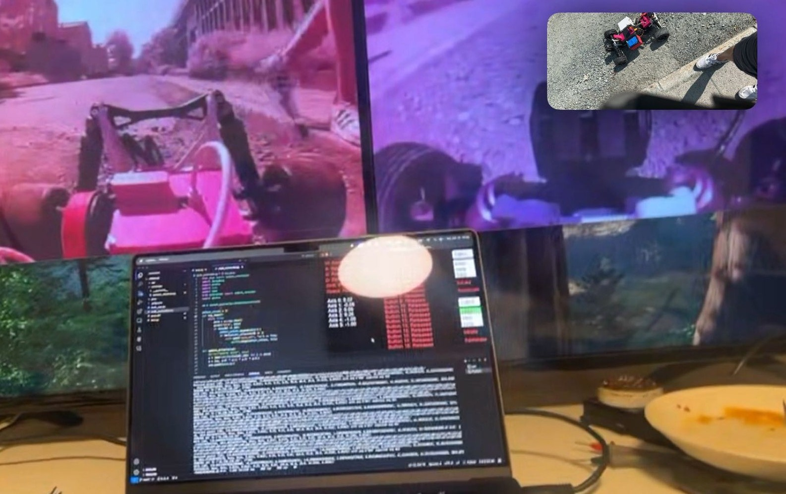

En RC-bil som ikke bryr seg om hvor langt du kjører
En langdistanse RC-bil som strømmer to kameraer over 4G, kjørt fra en PC hvor som helst på internett. Det interessante er ikke maskinvaren, det er nettverket: en egen UDP-hole-punching-protokoll så bilen og kontrolleren finner hverandre direkte, uten statiske IP-er, uten relé-servere, og med lavest mulig forsinkelse.

Hvorfor dette ble vanskelig
Hjemme-5G var utløseren. De fleste mobilabonnementer sitter bak carrier-grade NAT, som betyr: ingen innkommende tilkoblinger, ingen statisk IP, ingen portforwarding. Den vanlige løsningen er en relé-server i midten, men en relé legger på forsinkelse, og forsinkelse er døden for RC-kjøring.
Protokollen
UDP-hole-punching
- Begge endepunkter registrerer seg hos en lett rendezvous-tjeneste som kun utveksler offentlige IP- og portpar.
- Hvert endepunkt sender så UDP-pakker mot den andres par. NAT-mappinger faller på plass på begge sider, og trafikken går P2P fra det øyeblikket.
- Rendezvous-tjenesten er ute av bildet så snart håndtrykket er ferdig.
Reconnect og dårlige forbindelser
- Periodiske keep-alives holder NAT-mappingene åpne.
- Når linken faller, gjør begge sider et nytt håndtrykk uten at operatøren må gjøre noe.
- Mottrykk på videopipelinen så et kort fall ikke gir en lang kø med utdaterte bilder.
Video
To kameraer på bilen (et primært frontkamera og et bredere oversiktskamera), kodet og sendt som parallelle UDP-strømmer. Mottakeren tegner begge feedene side om side. Encoder-bitraten tilpasser seg den målte linkkvaliteten så bildet brytes ned gradvis i stedet for å stoppe helt.


Demoer
Tidlig innendørsdemo.
Utendørs, fulgt etter på sykkel.
Langdistanse. Kjørt ut av syne.
Hva jeg ville endret
Bytte til QUIC for videopathen, slik at jeg får køhåndtering og connection migration gratis. Legge på et forward-error-correction-lag for keyframes; å miste en keyframe på en dårlig link er fortsatt den verste feilmoden. Og, helt forutsigbart, gi bilen en bedre antenne.